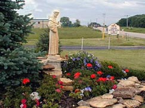
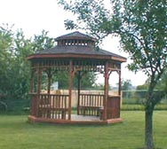
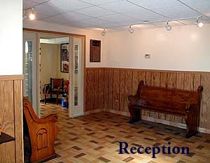
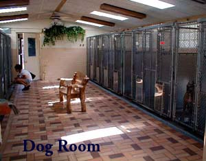
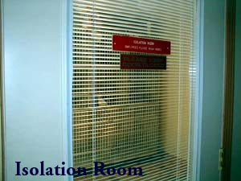

About Us
The Tender Loving Care Animal Shelter, more often referred to as T.L.C., has been in operation since April first, 1974. Although there were animal control programs set up by county and local government bodies, as a group of concerned animal lovers we felt that this was not enough. Just getting stray animals off the streets and disposing of them was not the answer to the overwhelming animal problem that is out there. Concerned about the welfare of these animals, T.L.C. was formed.
T.L.C. has served the community as a private, non-profit, humane society, dedicated to the prevention of abuse, neglect, and cruelty to animals. The shelter provides refuge for an average of three to four thousand animals yearly.
At first we rented a building, about a mile from our present location, to shelter animals in need. The building wasn't anything to brag about, but it did serve an important need, by allowing us to provide those animals a place where they were able to receive food, warmth, and the care they needed, until we were able to find loving homes for them. Then a few years later, through the hard work, dedication, and generosity of T.L.C.'s many friends, we were able to build a new facility, which would become T.L.C.'s permanent home.
T.L.C. has also been an important force in helping to get various humane legislation enacted. The shelter has provided educational programs on animal care and problems, for schools, scout groups, kennel clubs, etc. So much of the animal problem stems from ignorance, a lack of awareness, or lack of concern about the crisis animals face. We are trying to rectify this situation by making the public more aware of how severe the problems are, and what they can actively do to help change it.
We actively promote spaying and neutering of pets, in an effort to help curb, and we hope someday soon, end this terrible animal overpopulation problem. Puppies and kittens are cute, but the sad truth is, there are not enough homes for them all. In this area alone, thousands of animals are destroyed each year for lack of homes, and across the United States, the numbers soar to over 15 million! We are fighting to do something about this terrible tragedy.
But we need your help. Won't you please help us help them?
We cannot accomplish all of this without your support. T.L.C. is run solely on contributions, and raising the money to care for these animals has become the biggest challenge the shelter has ever had to meet. We have been able to shelter thousands of animals throughout the years, but it seems with each passing year, the cost to help these animals keeps skyrocketing. Food, medication, utilities etc., keep going up each year, but the shelter's income has not increased at the same rate, to keep up with all these bills.
We do not want to curtail any of the shelter's programs, or be forced into turning animals away, because we do not have the money to care for them. T.L.C. is not funded by any state, county, or local municipality, all the money to care for these animals comes from contributions. T.L.C. has been able to help a multitude of animals throughout the years, but there are still many more that are in need of our help. We cannot do it alone.